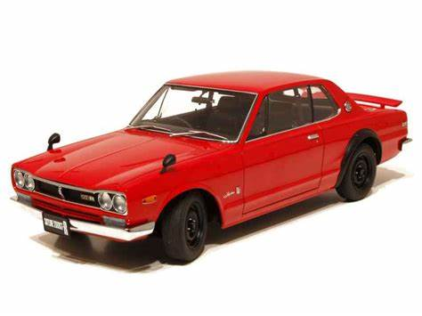
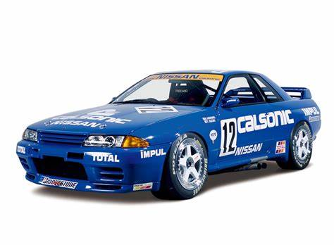
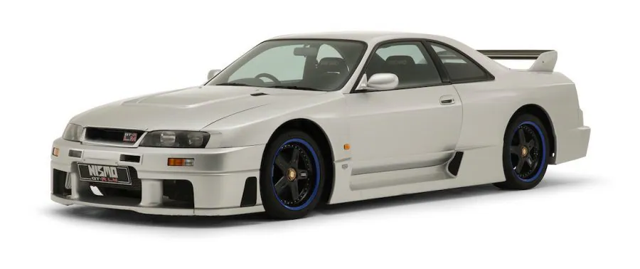

1957 Prince Skyline Deluxe
The Nissan Skyline was originally produced by the Prince Motor Company in 1957, and then by Nissan (becoming the 'Nissan Skyline') after the two companies merged in 1966. The Skyline was available as either a four-door sedan or a five-door station wagon, and it featured a 1.5L GA-30 engine. It wasn’t until 1964 that the first racing GT Skyline was introduced, still under the Prince Motors flag. The introduction of the GT Skyline marked the Skyline’s shift from sedan to race car.
The 1969 Skyline 2000 GTR
The 1969 GT-R version of the Skyline was a touring car like no other. Taking cues from the Nissan Prince R380 racing prototype, it relied on a four-valve Dual Overhead Cam engine for power and four-wheel independent suspension for its remarkable handling. The car obliterated the competition in Japan's domestic touring races, winning 52 races in its first three years of competition.
The 1990 Skyline GT-R R32
The R32 Skyline GT-R had all-wheel drive and the famed Nissan RB26DETT inline six engine that pumped out 280 horsepower. It still wasn’t sold in America, but the JDM (Japanese Domestic Market) model was and still is a legend in the American tuner community. A stripped-down version of the R32 entered the Japanese Touring Car Championship in 1989 and won every race it started—29 in a row—over the next four seasons. It was then that the legend of the GT-R was truly born.
The 1993 R33 SKYLINE GT-R
.jpg)
.jpg)